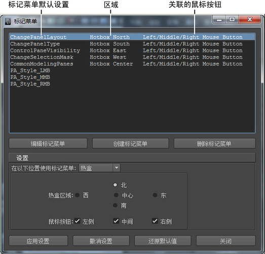

若要打开标记菜单编辑器，请选择“窗口 > 设置/首选项 > 标记菜单编辑器”(Windows > Settings/Preferences > Marking Menu Editor)。
使用此编辑器可编辑可用的标记菜单。定义标记菜单后，必须将其指定给热键或将其添加到热盒中，才能使用它。

创建标记菜单(Create Marking Menu) /编辑标记菜单(Edit Marking Menu)
在该对话框中，可设定菜单名称并测试标记菜单。若要编辑标记菜单中的项目，请在标记菜单图标上单击鼠标右键，并选择“编辑菜单项”(Edit Menu Item)。
标记菜单项编辑器
在编辑标记菜单项时，会显示该编辑器。
- 标签(Label)
-
输入标记菜单项的名称。
- 图标文件名(Icon Filename)
-
输入图标文件的名称。
- 命令(Command(s))
-
输入用作菜单项的命令的 MEL 脚本。您可以使用鼠标中键从“脚本编辑器”(Script Editor)的底部面板拖动 MEL 脚本。
- 复选框(Check Box)
-
在标记菜单项旁显示复选框。
- 单选按钮(Radio Button)
-
在标记菜单项旁显示单选按钮。
- 都不是(Neither)
-
在标记菜单项旁不显示任何内容。
- 选项框(Option Box)
-
打开选项框可显示菜单项旁边的选项框
 ，以便可以从标记菜单更改工具的选项。 注： 如果工具或操作没有选项窗口，请使用 MEL 代码创建该框。创建该框后，写入 MEL 代码来调用选项窗口。有关 MEL 命令的详细信息，请参见运行 MEL 命令。
，以便可以从标记菜单更改工具的选项。 注： 如果工具或操作没有选项窗口，请使用 MEL 代码创建该框。创建该框后，写入 MEL 代码来调用选项窗口。有关 MEL 命令的详细信息，请参见运行 MEL 命令。 - 选项框命令(Option Box Command(s))
-
输入 MEL 脚本以用作菜单项的选项框的命令。
设置(Settings)
- 在以下位置使用标记菜单(Use Marking Menu in)
-
指定标记菜单是链接到热盒还是热键。
- 热盒区域(Hotbox Region)
-
如果为“在以下位置使用标记菜单”(Use Marking Menu in)选择了热盒，请选择标记菜单占用的“热盒”(Hotbox)区域：北、南、东、西或中心。
- 鼠标按钮(Mouse Button(s))
-
选择用于显示标记菜单的鼠标左键、鼠标中键或鼠标右键。可以选择一个、两个或三个鼠标按钮。
在热键编辑器中将菜单指定给热键
如果要将标记菜单指定给热键，请在热键编辑器中配置热键。若要打开热键编辑器，请选择“窗口 > 设置/首选项 > 热键编辑器”(Windows > Settings/Preferences > Hotkey Editor)。